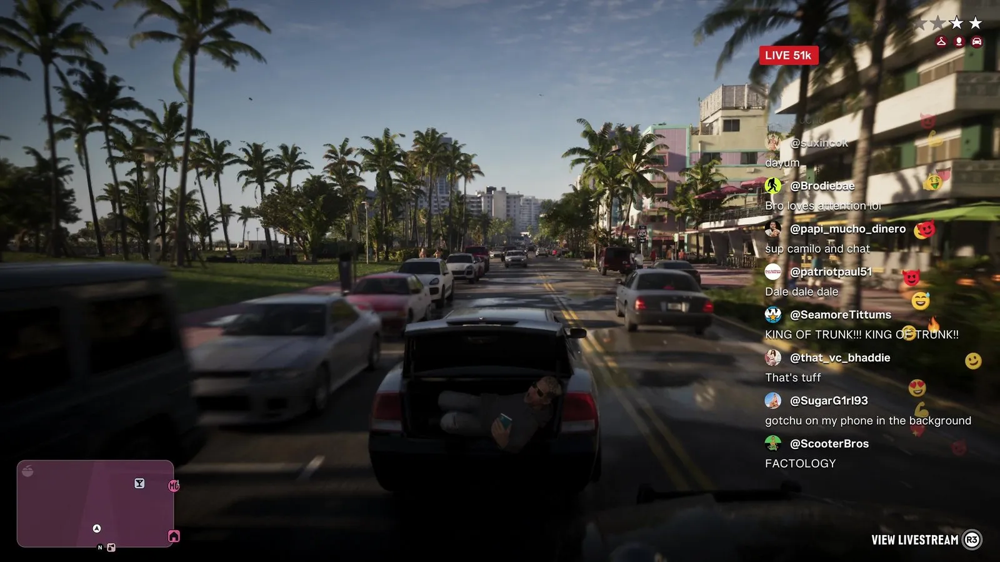
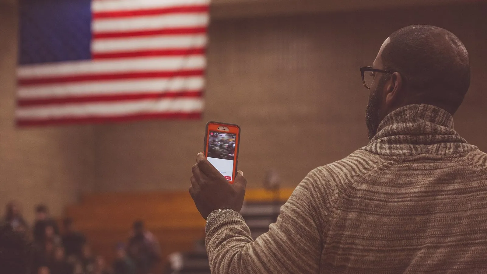

Стрим из багажника «KING OF TRUNK» и IRL-стримы
Опубликовано:
Явление настоящее: люди ведут прямые эфиры с телефона прямо с улицы и из машины, а зрители в чате подбадривают. Но Rockstar довела его до абсурда ради шутки: стример лежит в багажнике во время погони и продолжает болтать с чатом. Это стёб над культурой стримов, а не копия конкретного случая.


- В «Расширенном показе» парень лежит в открытом багажнике едущей машины и ведёт прямой эфир с телефона.
- На экране — счётчик «LIVE 51k» (51 тысяча зрителей) и чат: «sup camilo and chat», «KING OF TRUNK!!! KING OF TRUNK!!».
- Игрок может открыть чужой эфир кнопкой «View Livestream».
- IRL-стримы (от in real life — «в реальной жизни») — прямые эфиры с телефона с улицы, из машины, из магазина.
- Закон Флориды прямо запрещает водителю везти человека на багажнике, капоте, крыше или бампере.
Что в игре
В «Расширенном показе» GTA 6 камера едет за машиной по улице Вайс-Сити. Багажник открыт, внутри лежит парень с телефоном и ведёт прямой эфир. В углу экрана — красная плашка LIVE 51k, рядом бежит чат: зрители здороваются («sup camilo and chat»), шутят и скандируют «KING OF TRUNK!!!» — «король багажника».
Это не просто фон: в правом нижнем углу кнопка View Livestream. По данным превью, в телефоне героев есть соцсети, и чужие прямые эфиры можно открыть на весь экран.
Что в реальности
IRL-стримы (от англ. in real life — «в реальной жизни») — прямые эфиры, которые ведут не из-за компьютера, а с телефона: на улице, в машине, в магазине, в толпе. Зрители пишут в чат и подкидывают донаты, поэтому стримеры соревнуются за внимание всё более рискованными выходками. В русскоязычном интернете такие эфиры называют трэш-стримами.
Ехать в багажнике — это уже нарушение. Закон Флориды (статья 316.2015) запрещает водителю везти человека на бампере, капоте, крыше или багажнике машины на любой дороге штата, округа или города. Нарушение считается дорожным правонарушением в движении.
Rockstar дала стримеру имя прямо в чате: «sup camilo and chat» — «привет, Камило и чат». А один из зрителей пишет «gotchu on my phone in the background» — «у меня ты фоном на телефоне». Так Rockstar высмеивает не только стримера, но и тех, кто его смотрит.
Совпадает и отличается
| Реальность | GTA 6 | |
|---|---|---|
| Прямой эфир с телефона | IRL-стримы | 🟢 Да |
| Счётчик зрителей и живой чат | Как на стрим-площадках | 🟢 Да |
| Езда в багажнике | Запрещена законом Флориды | 🟣 Ради шутки — во время погони |
| Конкретный реальный стример | — | 🔵 Нет, персонаж вымышленный |
Источники: Rockstar Games — «Расширенный показ» GTA 6 (официальное видео); Florida Statutes § 316.2015 (Unlawful for person to ride on exterior of vehicle); SVG, Notebookcheck — разбор сцены; Wikimedia Commons — фото Tony Webster (CC BY-SA 2.0).
Реальные фото: Фото: Tony Webster from Minneapolis, Minnesota, United States, CC BY-SA 2.0 · Wikimedia Commons. Кадры игры: Rockstar Games.
Каждый день — одно сравнение: кадр игры рядом с реальным фото. Подписывайтесь:
YouTubeInstagramTikTok
 vs
vs
 vs
vs
 vs
vs